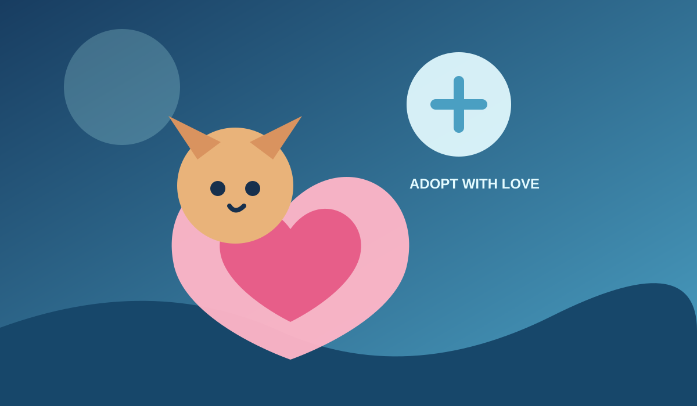

Pet discovery
Visitors can explore pets through clear visual cards and friendly presentation.
Frontend project · 2024
A friendly and responsive frontend experience that helps people explore pets and learn about the adoption process.

About the project
The Pet Adoption System presents available pets and adoption information through a clean, accessible interface. The design focuses on making it easy for visitors to discover pets, understand their stories, and take the next step.
Visitors can explore pets through clear visual cards and friendly presentation.
The interface adapts across screen sizes for a consistent browsing experience.
Pet and adoption-related details are organised so they are easy to understand.
Focused page structure helps users move naturally from discovery toward adoption information.
Technology